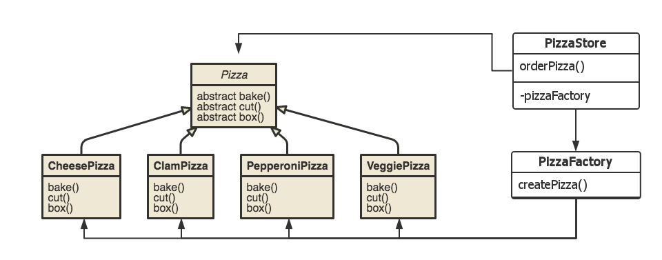

From "Factory" to Design Patterns
从“工厂”谈设计模式
Tao Zhang
"GoF(Gang of Four)"

"Head First"
What is a Factory ?
a method which creates an object dynamically(at run-time)
// instead of creating by 'new'
Pizza pizza = new CheesePizza(); //whenever you 'new', it has to be a concrete class
// use a factory
Pizza pizza = createPizza(params);
A commonly seen factory
Pizza createPizza(String type) {
if (type.equals("cheese")) {
return new CheesePizza();
} else if (type.equals("clam")) {
return new ClamPizza();
} else if (type.equals("pepperoni")) {
return new PepperoniPizza();
} else if (type.equals("veggie")) {
return new VeggiePizza();
} else return null;
}
Why do we need a Factory ?
The objects that the factory creates
Inheritance and Polymorphism
public class PizzaStore {
Pizza createPizza(String type) {
//dynamically returns an instance of one of Pizza's subclasses
}
public Pizza orderPizza(String type) {
Pizza pizza = createPizza(type);
System.out.println("--- Making a " + pizza.getName() + " ---");
pizza.prepare();
pizza.bake();
pizza.cut();
pizza.box();
return pizza;
}
}
Two Principles of OOP
“Prgram to an interface, not an implementation”
The Motive behind
createPizza()
"Dynamic"
orderPizza()
"Generic", "Abstract", "Reuseable"
Factory in Dynamic Lanugages
public class PizzaStore {
Pizza createPizza(String type) {
//dynamically returns an instance of one of Pizza's subclasses
}
public Pizza orderPizza(String type) {
Pizza pizza = createPizza(type);
//Ruby: "#{type}Pizza".constantize.new
System.out.println("--- Making a " + pizza.getName() + " ---");
pizza.prepare();
pizza.bake();
//Ruby: pizza.send("#{type}_bake")
pizza.cut();
pizza.box();
return pizza;
}
}
Simple Factory Pattern
Dynamically create one of a group of similiar objects, so that a generic method can apply to any of them
Now, What (t.. f...) are these ?
- "Abstract Factory"
- "Factory Method"
They are both design patterns that can create families of related objects
2 Families of Pizzas
- New York Style
- Chicago Style
Factory Method Pattern
Inheritance
public class PizzaStore {
//factory method is now abstract
abstract Pizza createPizza(String type);
...
}
public class ChicagoPizzaStore extends PizzaStore {
Pizza createPizza(String type) {
if (type.equals("cheese")) {
return new ChicagoStyleCheesePizza();
} else if (type.equals("veggie")) {
return new ChicagoStyleVeggiePizza();
} else if (type.equals("clam")) {
return new ChicagoStyleClamPizza();
} else if (type.equals("pepperoni")) {
return new ChicagoStylePepperoniPizza();
} else return null;
}
}
Factory Method Pattern is nothing but Class Inheritance
In fact ...
“Factory Method lets a class defer instantiation to subclasses.”
In fact ...
Really just a ...
Template Pattern
used upon the createPizza() method
and ...
Template Pattern is really nothing but Class Inheritance
Abstract Factory Pattern
Instead of inheritance, use compositionCompostion
public class PizzaStore {
// "has-a"
PizzaFactory pizzaFactory;
public PizzaStore(PizzaFactory factory) {
this.pizzaFactory = factory;
}
public Pizza orderPizza(String type) {
// delegate the factory method to an (member) object
pizza = factory.createPizza(type);
...
}
}
Compostion
the factory method is wrapped into an object
The compostional version of
← Simple Factory Pattern
Abstract Factory Pattern
(at run-time) delegate the createPizza() method to a particular subclass
A Common Confusion
public class ChicagoPizzaFactory extends PizzaFactory {
Pizza createPizza(String type) {
if (type.equals("cheese")) {
return new ChicagoStyleCheesePizza();
} else if (type.equals("veggie")) {
return new ChicagoStyleVeggiePizza();
} else if (type.equals("clam")) {
return new ChicagoStyleClamPizza();
} else if (type.equals("pepperoni")) {
return new ChicagoStylePepperoniPizza();
} else return null;
}
}
“There's a Factory Method Pattern inside Abstract Factory Pattern” üò± ...
Making it more confusing ...
public class PizzaStore {
PizzaFactory pizzaFactory;
//slightly improve the constructor
public PizzaStore(String style) {
if (style.equals("Chicago")) {
pizzaFactory = new ChicagoPizzaFactory();
}else if (style.equals("New York")) {
pizzaFactory = new NYPizzaFactory();
}
}
...
}
the constructor is now a Simple Factory method, so ...
“There's also a Simple Factory Pattern inside Abstract Factory Pattern” üò± ...
Think Deeper
Factory Method Pattern
Abstract Factory Pattern
Any Better?
Two Principles of OOP
“Favor object composition over class inheritance”
What happens at "run-time"
Factory Method Pattern
pizzaStore = new ChicagoPizzaStore();
Abstract Factory Pattern
pizzaFactory = new ChicagoPizzaFactory();
pizzaStore = new PizzaStore(pizzaFactory);
...
//and later
pizzaStore.setPizzaFactory(new NYPizzaFactory());
If you favor Compostion, you program to interface, not to implementation
in terms of object creation, the two principles are one!
What's bad about Inheritance
-
Implementation fixed at complie time => Tight coupling between parent-child classes
- any change in the parent class's implementation will force the subclass to change
- should any aspect of the subclass not be appropriate for new problems, the parent class must be rewritten
What's good about Compostion
- Implementation changable at run time => Loose coupling (on interfaces)
In fact ...
Abstract Facotry is really just a ...
Strategy Pattern
used upon the createPizza() method
and ...
Strategy Pattern is just how Composition is implemented
Strategy Pattern (with Java 8)
public class PizzaStore {
//no factory delegate needed
//PizzaFactory pizzaFactory;
//public PizzaStore(PizzaFactory factory) {
// this.pizzaFactory = factory;
//}
public Pizza orderPizza(String type, PizzaFactory createPizza) {
pizza = createPizza(type);
...
}
}
just a method wrapped into an object
Strategy Pattern (with Java 8)
pizzaStore = new PizzaStore();
pizzaType = ... //get from a db query
//pass in strategy on the fly, no class hierarchy needed
pizzaStore.orderPizza(pizzaType,
type -> {
if (type.equals("cheese")) {
return new ChicagoStyleCheesePizza();
} else if (type.equals("veggie")) {
return new ChicagoStyleVeggiePizza();
} else if (type.equals("clam")) {
return new ChicagoStyleClamPizza();
} else if (type.equals("pepperoni")) {
return new ChicagoStylePepperoniPizza();
} else return null;
});
(not a good example though)
Strategy Pattern in Dynamic Languages
class PizzaStore
def order_pizza(String type)
# delegate the factory method to the block
pizza = yield type
...
end
end
pizza_store = PizzaStore.new
pizza_type = ... # get from a db query
# strategy as a block
pizza_store.order_pizza(pizza_type) do |type|
"ChicagoStyle#{type}Pizza".constantize.new
end
(not a good example though)
Now what if ...
Factory Method Pattern
Abstract Factory Pattern
What happens with Inheritance
- n*m class explosion
- code duplication
What happens with Compostion
Bridge Pattern
a.k.a Handler
What's bad about Inheritance
- Deep class hierarchy is usually unhealthy
What's good about Compostion
- Small class hieararchy => more objects, fewer classes
Similar Problems
with the Pizza class hierarchy
Improvement
"Encapsulate what varies"
public class Pizza {
PizzaIngredientFactory ingredientFactory;
public Pizza(PizzaIngredientFactory ingredientFactory) {
this.ingredientFactory = ingredientFactory;
}
void prepare() {
System.out.println("Preparing " + name);
dough = ingredientFactory.createDough();
sauce = ingredientFactory.createSauce();
cheese = ingredientFactory.createCheese();
veggies = ingredientFactory.createVeggies();
pepperoni = ingredientFactory.createPepperoni();
}
}
Recap
Simple Factory, Abstract Factory, Factory Method, Template, Strategy, Bridge
- What a factory does(the motive behind)
- How to implement inheritance and composition
- The 2 principles of OOP
Last Remark
How objects are created is really fundemental to OOP
Be aware of the problems with Class Hierarchy